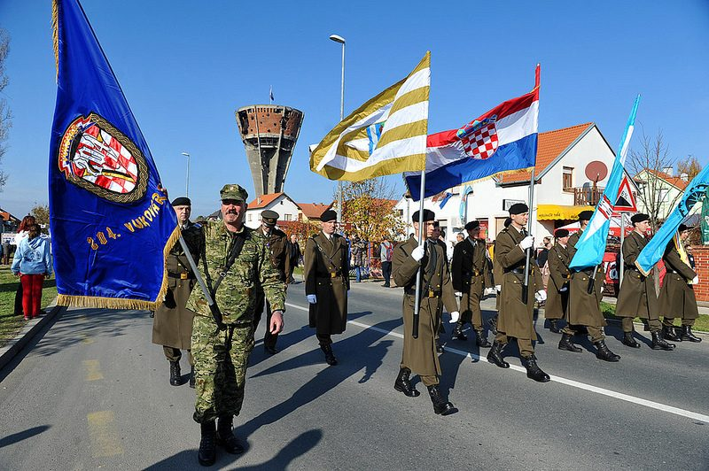
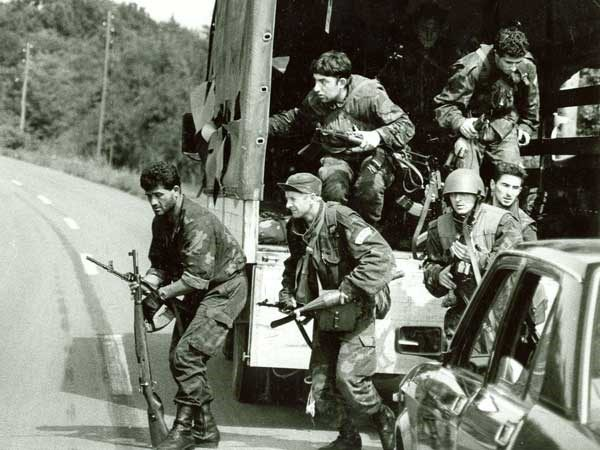
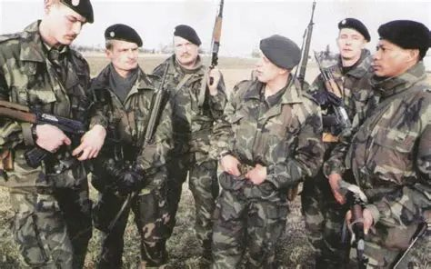

Priča o obrani grada tijekom Domovinskog rata
Povijest obrane Vukovara
Bitka za Vukovar bila je jedna od najvažnijih i najtežih bitaka Domovinskog rata. Trajala je od ljeta do studenoga 1991. godine.
Grad Vukovar bio je izložen snažnim napadima JNA i srpskih paravojnih snaga. Unatoč velikoj nadmoći napadača u ljudstvu i naoružanju, hrvatski branitelji pružali su otpor gotovo tri mjeseca.
Obrana grada postala je simbol hrabrosti, zajedništva i odlučnosti hrvatskih branitelja i stanovnika Vukovara.
Vojne postrojbe i branitelji
204. brigada HV
Jedna od najpoznatijih postrojbi obrane Vukovara. U njezinu sastavu djelovali su brojni branitelji koji su branili grad tijekom tromjesečne opsade.

Hrvatska policija
Policijske snage imale su važnu ulogu u obrani grada, održavanju sigurnosti i sudjelovanju u obrambenim aktivnostima.

Hrvatska vojska
Pripadnici hrvatskih obrambenih snaga sudjelovali su u obrani Vukovara, zajedno s drugim braniteljima.

Dragovoljci i civili
Velik doprinos obrani dali su dragovoljci iz različitih dijelova Hrvatske, kao i stanovnici koji su pomagali braniteljima i civilnom stanovništvu.

Vremenska crta događaja
Kolovoz 1991.
Pojačavaju se napadi na Vukovar. Počinje najteže razdoblje obrane grada.
Rujan 1991.
Grad je pod sve snažnijim napadima. Branitelji nastavljaju pružati otpor unatoč teškim uvjetima.
Listopad 1991.
Opsada se nastavlja, a razaranja grada postaju sve veća.
18. studenoga 1991.
Nakon gotovo tri mjeseca obrane, slomljena je organizirana obrana grada.
Značaj Vukovara
Vukovar je grad na istoku Hrvatske, smješten na obalama Dunava, koji ima veliko povijesno, kulturno i nacionalno značenje za Hrvatsku.
Njegovo je značenje posebno povezano s Domovinskim ratom 1991. godine, kada je grad nakon gotovo tromjesečne opsade pao u ruke JNA i
srpskih paravojnih snaga. Tijekom bitke za Vukovar grad je teško razoren, a mnogi su stanovnici ubijeni, protjerani ili odvedeni u
zatočeništvo. Posebno se pamti Vukovarska bolnica i Ovčara, mjesto stradanja brojnih ranjenika i civila.
Vukovar danas simbolizira:
- Hrabrost i otpor hrvatskih branitelja.
- Žrtvu i patnju stanovnika tijekom rata.
- Slobodu i zajedništvo hrvatskog naroda.
- Sjećanje i poštovanje prema svim poginulima i nestalima.
Vukovar nije samo grad, već simbol hrabrosti, žrtve i borbe za slobodu Hrvatske. Zato se svake godine 18. studenoga obilježava
Dan sjećanja na žrtvu Vukovara.